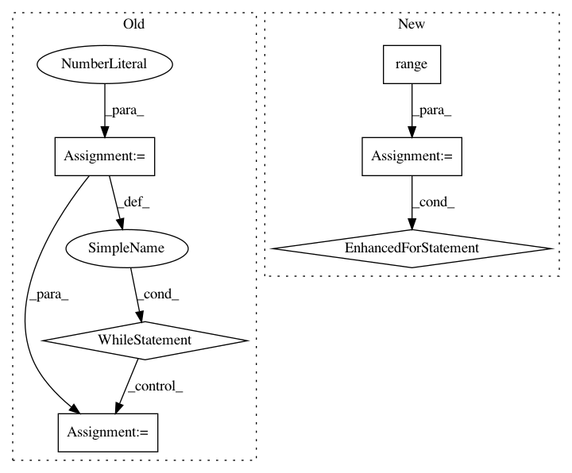

597ae33645d1a8a0e2e87e8bec05232594d5c447,pyAudioAnalysis/ShortTermFeatures.py,,chromagram,#,305
Before Change
signal = (signal - dc_offset) / (maximum - dc_offset)
num_samples = len(signal) // total number of signals
cur_position = 0
count_fr = 0
num_fft = int(window / 2)
chromogram = np.zeros((int((num_samples-step-window) / step), 12),
dtype=np.float64)
while cur_position + window - 1 < num_samples:
count_fr += 1
x = signal[cur_position:cur_position + window]
cur_position = cur_position + step
X = abs(fft(x))
X = X[0:num_fft]
X = X / len(X)
chroma_names, chroma_feature_matrix = chroma_features(X, sampling_rate,
num_fft)
chroma_feature_matrix = chroma_feature_matrix[:, 0]
chromogram[count_fr-1, :] = chroma_feature_matrix.T
freq_axis = chroma_names
time_axis = [(t * step) / sampling_rate
for t in range(chromogram.shape[0])]
After Change
num_fft = int(window / 2)
chromogram = np.zeros((int((num_samples-step-window) / step) + 1, 12),
dtype=np.float64)
for cur_p in tqdm(range(window, num_samples - step, step),
disable=not show_progress):
count_fr += 1
x = signal[cur_p:cur_p + window]
X = abs(fft(x))
X = X[0:num_fft]
X = X / len(X)
chroma_names, chroma_feature_matrix = chroma_features(X, sampling_rate,
num_fft)
chroma_feature_matrix = chroma_feature_matrix[:, 0]
chromogram[count_fr-1, :] = chroma_feature_matrix.T
freq_axis = chroma_names
time_axis = [(t * step) / sampling_rate
for t in range(chromogram.shape[0])]
In pattern: SUPERPATTERN
Frequency: 3
Non-data size: 6
Instances
Project Name: tyiannak/pyAudioAnalysis
Commit Name: 597ae33645d1a8a0e2e87e8bec05232594d5c447
Time: 2020-06-13
Author: tyiannak@gmail.com
File Name: pyAudioAnalysis/ShortTermFeatures.py
Class Name:
Method Name: chromagram
Project Name: pyprob/pyprob
Commit Name: 22b907cc151f4ae9ec9ff95e2438836ef5660b60
Time: 2020-08-06
Author: atilimgunes.baydin@gmail.com
File Name: pyprob/model.py
Class Name: Model
Method Name: posterior
Project Name: TheAlgorithms/Python
Commit Name: 110a740d5d026c4675489ea2acfefda773c4e032
Time: 2020-12-10
Author: 31663979+MrGeek1337@users.noreply.github.com
File Name: ciphers/caesar_cipher.py
Class Name:
Method Name: brute_force